Flexible task types
Stopwatches, countdowns, world clocks, email reminders, and consent-based SMS reminders.
Timers, countdowns, world clocks, reminders, alarms, calendars, reports, and activity tracking come together in one local-first workspace.
Version 3.5.0 · macOS 13 or later · Apple silicon
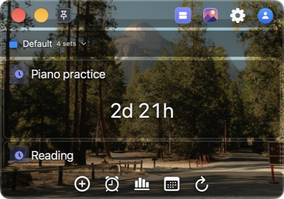


Stopwatches, countdowns, world clocks, email reminders, and consent-based SMS reminders.
Organize up to 50 tasks per set, reuse routines, archive snapshots, and switch sets without losing context.
Analyze sessions, daily totals, and current readings; export CSV, HTML, PDF, or an expiring web report.
Keep working when the network is unavailable. Changes stay saved on your Mac and sync resumes later.
Create an immediate or manual stopwatch, a duration countdown up to 168 hours, a fixed end-time countdown, an offline world clock with daylight-saving behavior, or an account reminder.
Shape every session. Pauseable or continuous timing, optional focused-task beeps from 5 minutes to 3 hours, completion sounds, notes, and lost-focus behavior.
Keep tasks useful. Edit, reorder, adjust, complete, copy, move, turn into templates, and preserve calendar provenance through restarts and sync.
Continue completed work. Resume with accumulated time, restart from zero, schedule the next run, or choose a new end time for an expired fixed-end task.
Read long durations naturally. Times of 24 hours or more use day-and-hour notation throughout the app.
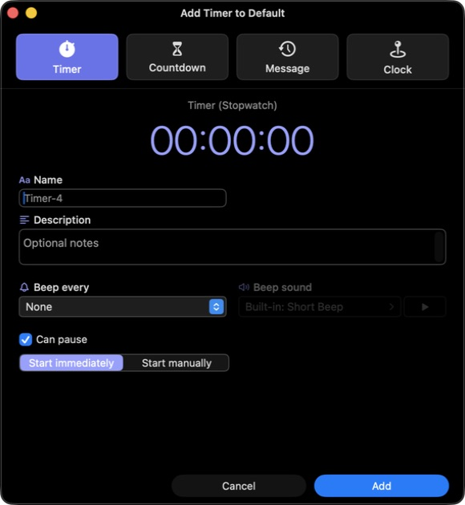
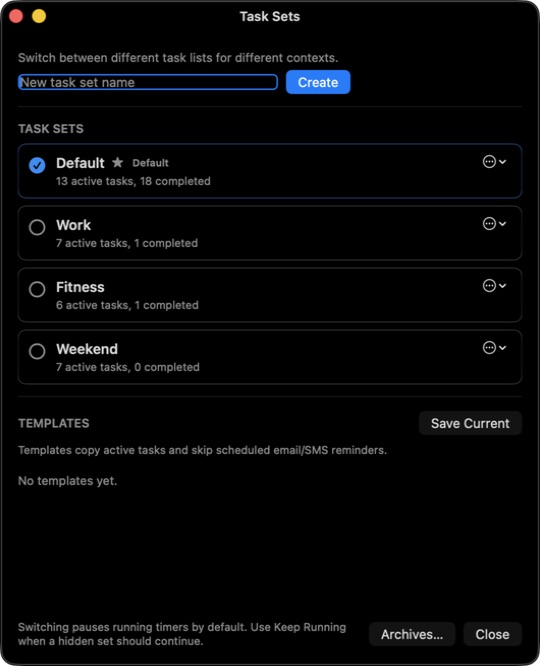
List View keeps tasks compact. Grid View gives every task a large card. Single View centers the prominent task in a flip-clock display. Minimal View reduces the window to the reading and optional hover controls.
Built for the keyboard. Use Space or click to start and pause when the action is available, then step to the previous or next task.
Remembered locally. Each mode keeps its own window geometry on this Mac, and Stay on Top keeps the active timer visible.
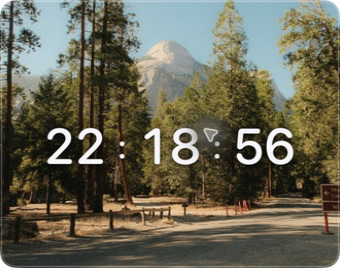
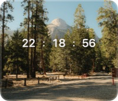
Browse continuous Week, Month, and Year views with an automatic or searchable holiday profile, then open World Agenda for a selected date or upcoming horizon.
Rich calendar layers. Filter public, bank and government, national, cultural, and religious dates; add festivals, nature and space, global sports, historical events, and On This Day.
Chinese secondary calendar. Show lunar dates, leap months, and traditional festivals beside the primary calendar.
From date to action. Create Countdown and Remind Me prefill the selected date, local time, timezone, and source context while handling daylight-saving gaps and ambiguities.
My Calendars stays local. With permission, selected Apple Calendar sources—including configured iCloud, Google, Exchange, and subscriptions—appear as a read-only overlay that this feature does not upload.
Holiday information is informational, not legal advice. Coverage varies by country, market, category, and year; unavailable official dates are not synthesized. Bundled offline coverage remains available if an online refresh cannot be used.
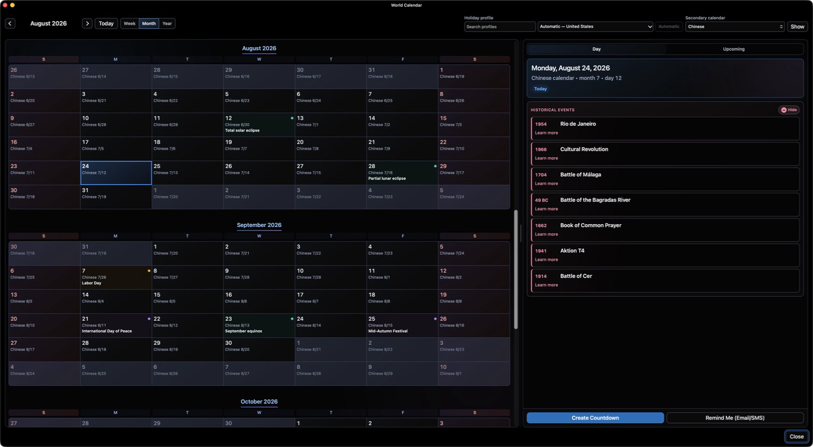
Create one-time or weekly alarms, use weekday presets, or schedule a quick alarm by hours, minutes, and seconds. Local profiles ring on the current Mac; signed-in accounts can sync alarms and target supported Macs, iPhones, and iPads.
Full alarm control. Edit, duplicate, enable on this Mac, choose Rings On devices, turn an alarm off everywhere, reactivate an expired one-time alarm, or review history.
Hard to miss. The ringing panel stays in front, loops the default sound, requests Dock attention, and offers Stop or up to three nine-minute snoozes.
Optional full-screen presentation. Take over every display while keeping Stop and Snooze in the normal ringing panel.
Mac alarms can alert only while this Mac is awake and XTimers is running. Sleep, shutdown, a closed lid, or quitting XTimers can prevent delivery.
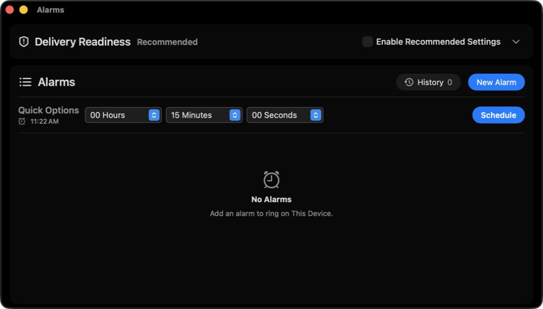
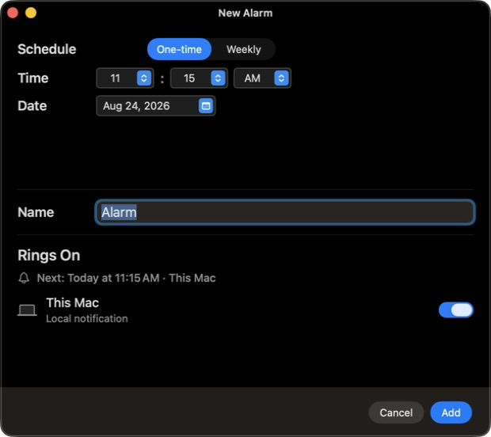
The Sound Library includes 30 Classic Tones, 22 World Ceremonial sounds, and 14 XTimers Originals, with separate choices for timer endings and interval beeps.
Find and preview. Search, filter, favorite, revisit recents, inspect waveforms, seek, and use the floating Stop control. Import custom sounds up to 10 MB and sync eligible sounds when signed in.
Choose how long endings play. Once, 10 seconds, 30 seconds, 1 minute, or 5 minutes, with banners, Dock attention, and an optional floating completion alert.
Build a visual workspace. Choose System, Light, Dark, or Pure Black; then use a solid color, local photo, rotating folder, bundled stock photo, or signed-in synced library.
Tune for legibility. Automatic or manual photo dimming, title-bar coverage, task and focused-task colors, menu-bar status color, previews, and storage-aware Reduce & Add.
The synchronized background library allows about 100 MB and images up to 3000 pixels. Background-library items are not manually reordered.
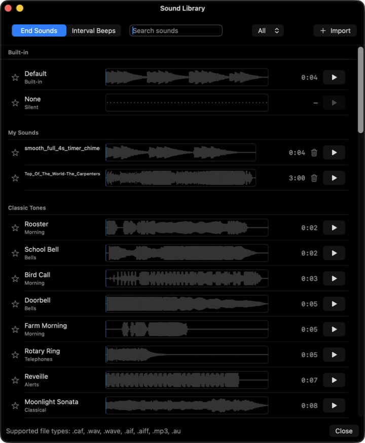
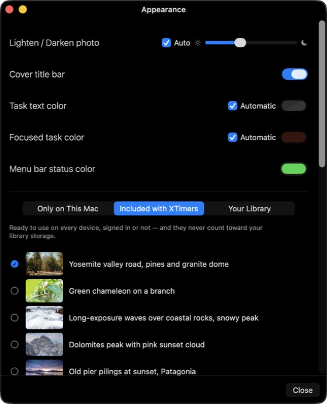
Actionable completion cards keep Stop Sound, Add Note, Restart, and Done together. Cards stack and stay connected to the task’s final reading, notes, completion time, status, and session history.
Archives you can use. Reset a set into an archive, search grouped snapshots, collapse sections, inspect task details and badges, copy information, and select multiple archives for a report.
Three report lenses. Sessions, Daily Totals, and Current Readings across selected sets, tasks, and archives, with standard or custom date ranges and prior-period comparison.
Accurate presentation. Completed, open, and automatic sessions are deduplicated, clipped to the requested range, and split at midnight. Optional report-only cleanup hides short sessions without changing raw history.
Take it with you. Copy a summary or full report; export CSV, HTML, or PDF; or create an expiring online report link from 1 to 365 days.
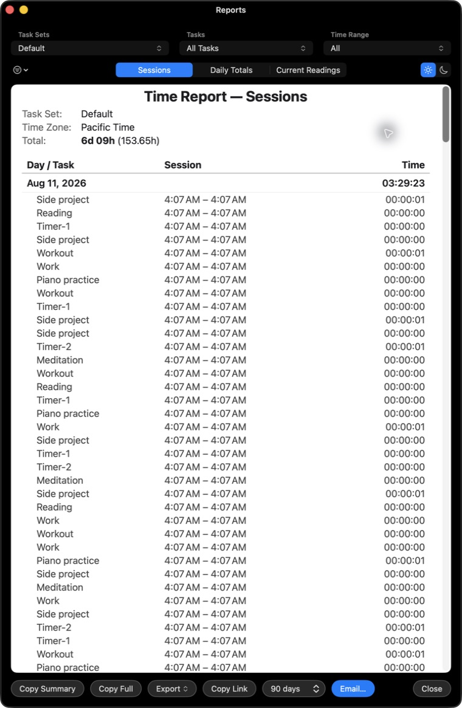
Flexible sets. Name, switch, rename, duplicate, reorder, archive, and choose a default set. Switch Keep Running preserves active work; summaries show task counts, elapsed time, and upcoming reminders.
An independent set total. Track an overall set timer in the main window or menu bar and let it continue through sleep or shutdown separately from task timing settings.
A capable menu bar. Show the prominent task reading and state, optional set name and total, configurable colors, full or compact presentation, up to 12 quick controls, set switching, window access, and sync status.
Automatic activity tracking. Opt in to a local-only Auto-Tracked set for the top 20 foreground apps, with day-to-year views, idle handling, exclusions, adjustments, resets, and roughly one year of local history.
Automatic activity data never synchronizes. The Mac App Store edition tracks application identity only; browser website and domain tracking is an XTimers Pro feature.
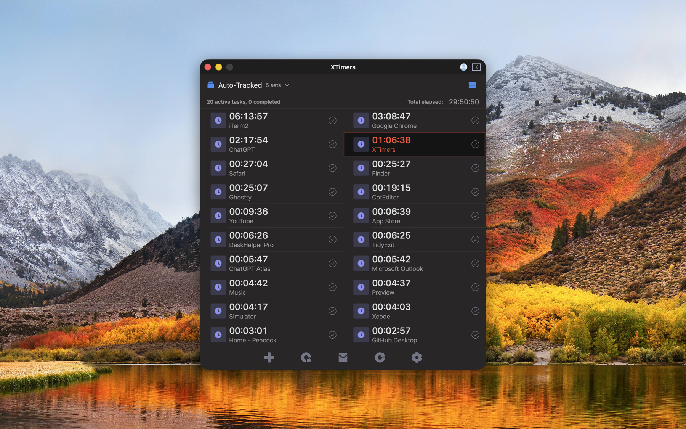
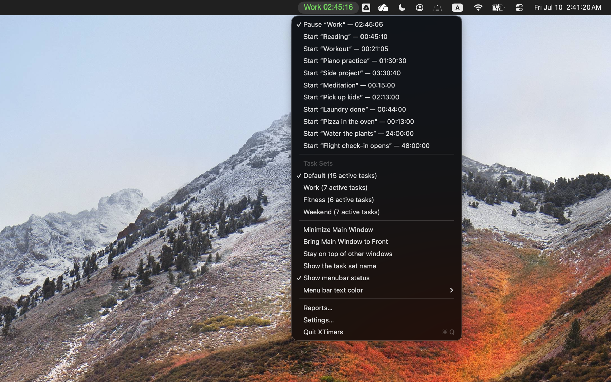
Sign in with an email code or password, Continue with Apple, or Continue with Google. Supported timers, reports, settings, sounds, reminders, backgrounds, and assets can follow your XTimers account across devices.
Offline does not mean blocked. XTimers reports Synced, Syncing, Offline—saved locally, Cloud unavailable—saved locally, and changes needing review while keeping ordinary local work available.
Protected Synchronization is opt in. Supported newly synchronized content is encrypted on the Mac before synchronization. Activation includes a recovery code and can distribute a copy through iCloud Keychain.
Recovery is explicit. Oversized attachments, corrupt content, recovery work, and mailbox state remain visible instead of being discarded silently.
Signing out is not deletion. It ends XTimers sign-in on the Mac without deleting the Xin Account, server data, or local timers.
Protected Synchronization does not encrypt on-device storage. Email and SMS content, account and synchronization metadata, and content synchronized before activation can remain readable. If both the recovery code and iCloud Keychain copy are lost, XTimers cannot recover protected content.
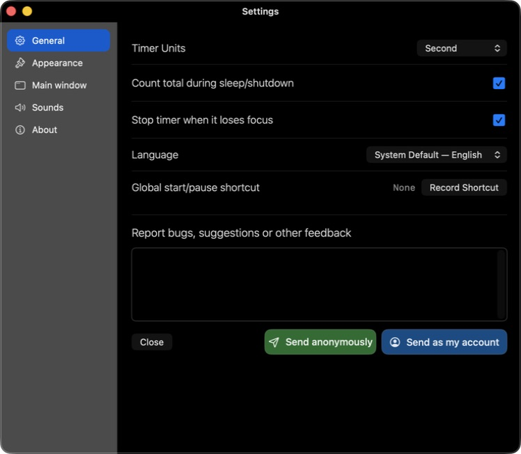
Five stable Settings sections—General, Appearance, Main window, Sounds, and About—bring the broad preference set into a predictable sidebar.
Create and run timers, countdowns, clocks, and reminders; browse reports and settings; use notifications and sounds; and synchronize supported XTimers data through the same Xin Account.
Designed for each device. A focused iPhone list and roomy iPad grid keep common actions close without shrinking the Mac interface.
Alarm targets. Signed-in accounts can choose supported joined iPhones and iPads in an alarm’s Rings On list.


XTimers uses Xin Account for shared sign-in while keeping timers, reports, settings, sounds, and SMS choices as XTimers product data. Learn how the account layers work.
Build a timer workspace that fits the moment—from one quiet reading to a cross-device day of calendars, alarms, reports, and synchronized routines.